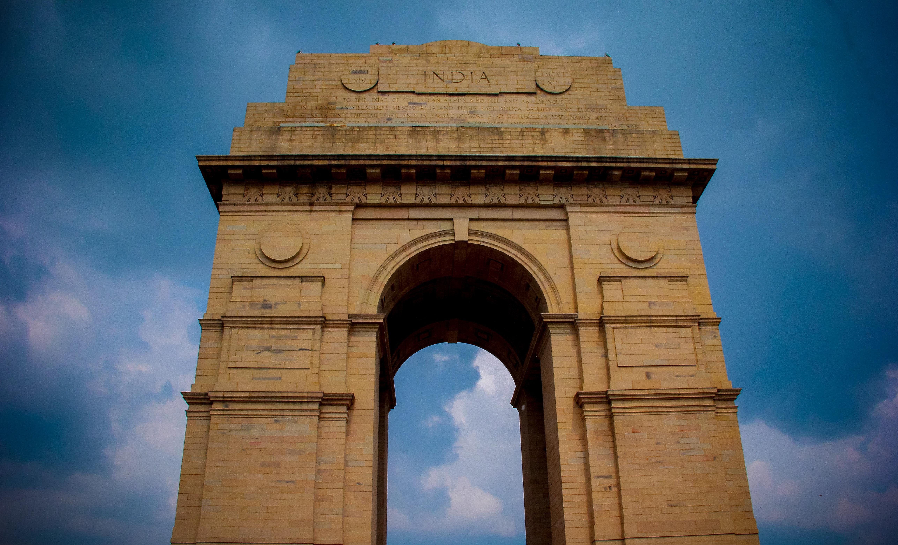

Places to Visit in Mumbai with Family
1. Gateway of India

"It is the primary name sparks in each mind"
Gateway of India, the best place to visit in Mumbai, was built in 1924 by George Willet to honor the visit of King George V and Queen Mary to Mumbai. Visit this place in the early morning or late evening hours to enjoy the cool breeze of the sea with your family sans the crowd. Located next to the iconic Taj Mahal Palace and facing the vast Arabian Sea, the Gateway of India leaves you spellbound in every way possible. Take a ferry ride offered here to experience a stupendous view of this monument right from the sea and you can also visit other main attractions nearby.And the best part? You don’t have to spend a penny to enjoy the beauty of this iconic monument which is often called the Taj Mahal of Mumbai. And the city has many such places that you can enjoy free of cost.
2. Elephanta Caves,Mumbai

Take a tour to this UNESCO World Heritage Site in Mumbai and get wonderstruck by the massive rock-cut caves that date back to several centuries. It has five caves dedicated to Hindu god Shiva and two caves depicting Buddhist architectures. To reach this place, you need to take a one-hour ferry ride from the Gateway of India, during which you can also enjoy the scenic beauty of Mumbai. Those who lack the spirit of a trekker can hop on the toy train that will take you on a tour of the caves right from the entry point. The restaurant and canteen run by MTDC can take care of your hunger pangs. If you are planning a one-day tour to the Elephanta Caves, this blog will give you more details. The city is home to many many-faceted jewels of Indian culture, full of ancient tombs, and gorgeous parks. Triveni Sangam, Allahabad Fort, Allahabad Planetarium, Chandrashekar Azad Park, Allahabad Museum, etc. are some of the top Allahabad tourist places. It can be visited along with Varanasi tour packages.
3. Siddhivinayak Temple,Mumbai

One of the most frequented temples in Mumbai, the Siddhivinayak Temple is dedicated to Lord Ganesh. Devotees from across India including famous personalities from Bollywood and sports throng the temple to seek the blessings of Siddhivinayak Ganapati. The auspicious idol of Lord Ganesha is carved out in a single black stone with the trunk bent towards right making it one-of-its-kind. You can plan a visit to this temple with your family for an enriched spiritual experience. Location: Khed Galli, Prabhadevi, Mumbai Timings: 05:30 am to 10:00 pm; every day Entry Fee: NA In the traditional times, Mathura was an important point of culture and civilization. According to the Archaeological Survey of India, the city is mentioned in the epic, Ramayana. In the epic, the Ikshwaku prince Shatrughna slays a demon called Lavanasura and claims the land. Afterwards, the ...
4. Chhatrapati Shivaji Terminus (CST), Mumbai

Chatrapati Shivaji Terminus is another UNESCO World Heritage Site situated right in the heart of Mumbai. Built in the year 1888, during the British colonial period, this edifice exemplifies the Victorian-Gothic style of architecture. While you are here, don’t forget to take a photograph with your family and kids. And guess what, the magnificent CST is the most photographed building in India after Taj Mahal! And once you are done with sightseeing, don’t forget to treat yourself and your dear ones to some lip-smacking food. Whether you are looking for budget restaurants, fine diners or buffet places, Mumbai has it all. Want some great ideas? Read our blog on the top restaurants in Mumbai. Location: Chhatrapati Shivaji Terminus Area, Mumbai Timings: Every day Entry Fee: N/A
5. Kidzania, Mumbai

Kidzania is an indoor amusement park made exclusively for kids with a unique concept of role-playing in a real city-like environment. Here, kids are required to perform a ‘job’ as a part of their role-playing. After successful completion of the job, they get paid in the form of kidzo money as an encouragement. You can see them brimming with joy as they make their own money for the first job in their life. Parents can relax at the lounge, from where they can monitor their kids on the TV screen. With such interactive edutainment activities, Kidzania should be your ideal destination for a fun-filled day with your tiny tots. Location: R City Mall, Ghatkopar West, Mumbai Timings: 10:00 am to 08:00 pm; Tuesday to Friday 10:00 am to 03:00 pm and 04:00 pm to 09:00 pm; Saturday, Sunday and Public Holidays Closed on Mondays Entry Fee: Different packages for kids, adults, and senior citizens, ranging from ₹300 to ₹1500. Check the website for more details.